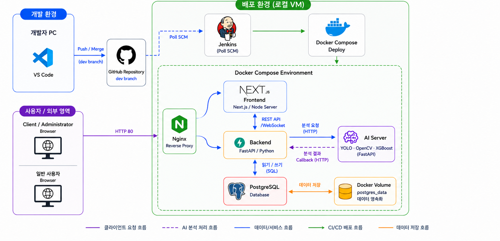
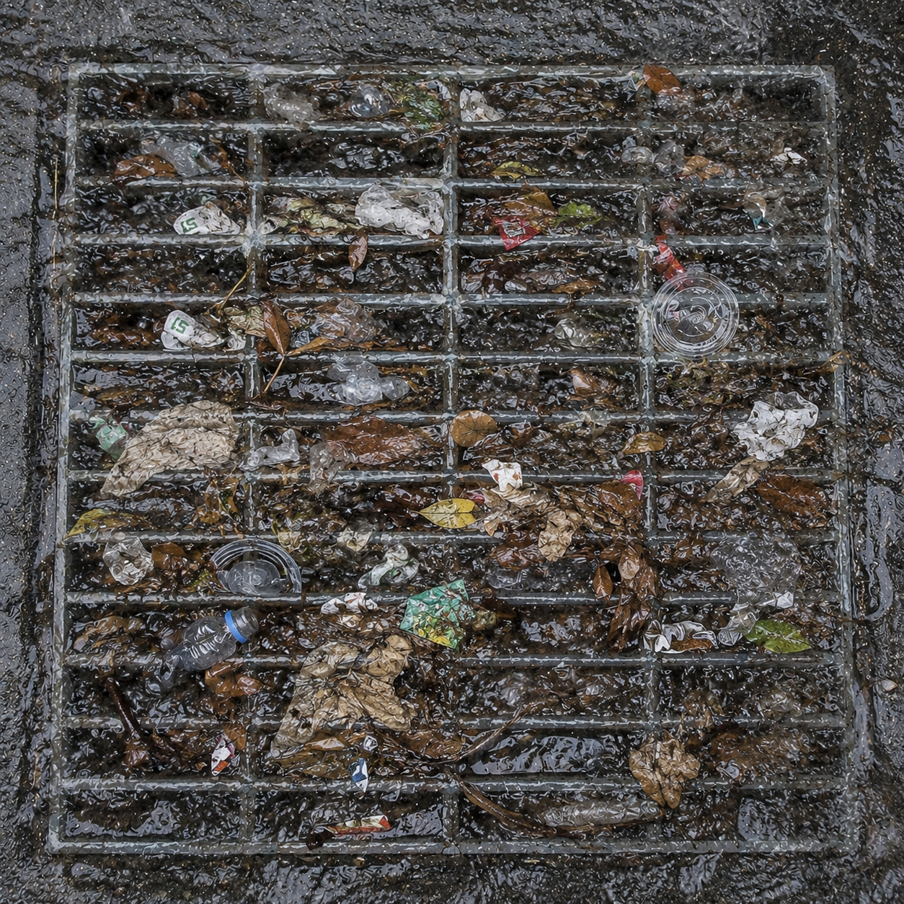
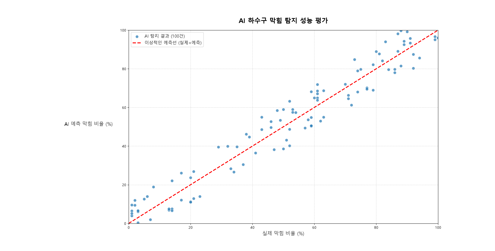
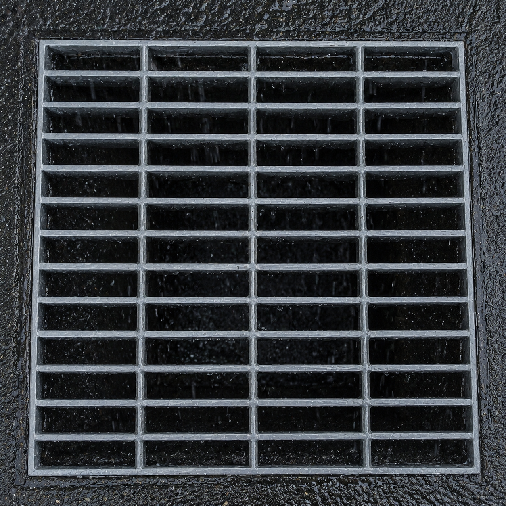

이미지·센서 기반 빗물받이 위험도 모니터링
우수주의보
이미지·센서 기반 빗물받이 상태 판단 및 관리자 화면 반영 시스템
화면 갱신지도 기반 상태 확인
상태 분류막힘·수위·유속 통합
우선순위위험 시설 선별
문제 정의부터 시연 흐름까지 순서대로 설명합니다.
01개발 필요성과 벤치마킹왜 이 서비스가 필요한가?
02AI 분석 설계이미지를 어떻게 판단 근거로 바꾸는가?
03웹 서버 및 서비스 구축결과는 어떻게 저장되고 화면에 반영되는가?
04인프라 / 운영 설계배포와 운영은 어떻게 고려했는가?
05시연과 마무리어떤 흐름으로 동작을 보여주는가?
01입력sample image와 mock sensor data를 시연 입력으로 사용합니다.
02분석Backend가 AnalysisJob을 만들고 AI server에 비동기 요청을 보냅니다.
03저장callback 결과와 작업 상태를 PostgreSQL에 남깁니다.
04반영WebSocket event를 받아 dashboard/detail 화면 상태를 갱신합니다.
- YOLO / OpenCV
- 이미지 라벨링
- AI 파이프라인
- FastAPI
- PostgreSQL
- callback / WebSocket
- 관리자 대시보드
- 상세 화면
- Docker / Jenkins
- XGBoost 기준
- AI ↔ Backend 통신
- 발표자료 구성
API 명세 공유 · 단위 통일 · 통합 점검 · 시연 정리
프론트엔드, 백엔드, AI 서버, DB를 분리해 MVP를 구성했습니다.
화면, API, 분석, 저장소, 배포 책임을 나눠 설명합니다.
Next.js / ReactFastAPIYOLO / OpenCV / XGBoostPostgreSQLDocker / Nginx / Jenkins

브라우저, Nginx, Backend/AI/PostgreSQL 연결 구조
빗물받이 하나가 막히면 도로의 배수 흐름이 달라집니다.
목표는 도시 전체 침수 예측이 아니라 개별 시설 상태를 빠르게 확인하는 흐름입니다.
- 빗물받이는 도로 빗물이 배수관으로 들어가는 첫 지점입니다.
- 낙엽, 쓰레기, 토사로 막히면 강우 중 배수 흐름이 제한됩니다.
- 개별 시설 상태를 확인해야 점검 우선순위를 잡을 수 있습니다.

sample image: 유입부가 이물질로 가려진 예시
강우 중에는 상태가 빠르게 변하므로, 변화가 발생한 뒤 화면에 반영되는 흐름이 필요합니다.
01강우빗물이 유입되기 시작합니다.
02유입량 증가시설별 유량 차이가 커집니다.
03차폐 증가이물질이 유입부를 가립니다.
04수위 상승mock sensor data에서 수위 변화를 봅니다.
05유속 저하흐름 둔화가 판단 근거가 됩니다.
06상태 갱신UI가 최신 상태를 반영합니다.
시각화와 동시성 처리가 필요한 이유는 여러 시설의 상태 변화가 같은 시간대에 발생할 수 있기 때문입니다.
기존 관리는 발견 이후 대응에 가깝습니다.
강우 중 개별 시설 변화를 즉시 설명하려면 이미지와 센서 기반 판단이 필요합니다.
정기 점검
기준과 이력 관리
강우 중 상태 변화 반영이 늦을 수 있음
시민 신고
현장 발견과 민원 접수
신고 전 우선순위 정렬이 어려움
QR / 관리번호
위치 특정과 이력 연결
현재 상태 판단 근거가 부족함
센서 / 관제
수치 상태 모니터링
이미지 근거와 화면 반영 연결이 필요함
벤치마킹은 디자인 참고가 아니라 상태 판단 서비스가 가져야 할 요구사항을 뽑는 과정입니다.
정기 점검
기준과 이력 관리
강우 중 상태 변화가 생긴 뒤 화면에 반영되는 흐름
시민 신고
현장 발견과 민원 접수
신고 전 시설별 우선 확인 대상을 제시하는 보조 흐름
QR / 관리번호
위치 특정과 이력 연결
시설 단위 DB 추적성과 상세 화면 연결
센서 / 관제
수치 상태와 다지점 모니터링
이미지 근거와 센서 근거를 함께 쓰는 판단 구조
결론: 발견, 판단, 저장, 화면 반영을 하나의 시나리오로 묶는 것이 차별점입니다.
사람이 먼저 찾는 방식에서, 시스템이 먼저 알려주는 방식으로 바꿉니다.
신고 대체가 아니라 이미지·센서 근거를 저장하고 화면에 반영해 점검 우선순위를 보조합니다.
이미지 근거센서 근거DB 추적성UI 상태 반영
문제 발견
점검 또는 신고 이후 파악
상태 변화 후보를 화면에서 먼저 확인
판단 방식
현장 확인 중심
이미지 feature와 센서 feature 결합
관리 단위
시설 이력 중심
개별 빗물받이 + 분석 작업 단위
결과 활용
기록과 사후 대응
우선 확인 대상과 상세 근거 제공
정량 기준차폐율, 탐지 신뢰도, 수위, 유속을 내부 분류 feature로 정리합니다.
운영성작업 상태, callback 결과, 실패 로그를 추적 가능한 구조로 둡니다.
화면 반영WebSocket event를 통해 dashboard/detail 화면 상태 갱신 흐름을 구성합니다.
출처: 물과미래 Vol.58 No.6, 「배수기능 확보를 위한 빗물받이 설치 및 유지관리 기준 마련」
6/15-18
기획·설계
요구사항
MVP
와이어프레임
ERD
6/19-23
MVP 개발
대시보드
API
DB
YOLO·XGBoost
6/24-28
통합·개선
WebSocket
UI
시연 데이터
6/29-7/1
테스트·발표
통합 점검
자료 정리
리허설
07 AI pipeline
AI 분석 설계 개요
판단 흐름
이미지 근거와 센서 근거를 결합해 내부 위험도 분류로 연결합니다.
01원본 이미지sample image를 분석 입력으로 받습니다.
02YOLO보이는 객체와 후보 영역을 찾습니다.
03OpenCVmask와 막힘 비율을 수치화합니다.
04XGBoost센서 feature와 함께 상태를 분류합니다.
05상태 분류양호, 주의, 위험, 판단불가로 저장합니다.
YOLO는 보이는 객체를 찾고, OpenCV는 막힘 비율을 수치화하며, XGBoost는 센서 feature와 결합해 상태를 분류합니다.
객체 탐지만으로는 배수 위험도를 안정적으로 판단하기 어렵습니다.
성능 평가를 주장하기보다 sample/mock 기반 경향 확인으로 설명합니다.
- YOLO는 보이는 객체와 후보 영역 탐지에 강점이 있습니다.
- 어두운 이미지, 빗물 반사, 낙엽/토사 혼재 상황은 해석을 흔듭니다.
- 따라서 mask, 품질 보정, 센서 feature가 함께 필요합니다.

보조 그래프: YOLO 단독 해석이 흔들릴 수 있어 후처리 기준을 추가한다는 인사이트를 설명
이미지 분석 결과를 위험도 판단으로 연결합니다
AI Pipeline
OpenCV는 탐지 결과를 실제 feature로 바꾸는 중간 단계입니다.
분석 영역, 어두운 영역, 차폐 비율을 정리해 XGBoost 입력으로 연결합니다.
원본 이미지
현장 사진을 기준으로 빗물받이 상태를 확인합니다.
OpenCV 전처리
대비와 경계를 보정해 분석 가능한 입력으로 정리합니다.
mask / dark area
분석 영역과 어두운 영역을 분리해 막힘 계산 기준으로 사용합니다.
ratio
후보 영역과 차폐 영역을 obstruction ratio로 정리합니다.
XGBoost에는 이미지 feature와 mock sensor data feature가 함께 들어가며, 결측은 판단불가 또는 보수적 분류 근거가 됩니다.
obstruction ratio
OpenCV 후처리
이미지 기반 막힘 정도
낮은 품질이면 판단불가 후보
detection confidence
YOLO 결과
탐지 신뢰도
낮으면 이미지 근거 가중 제한
water level
mock sensor data
수위 상승 여부
없으면 센서 근거 부족으로 표시
flow velocity
mock sensor data
유속 저하 여부
없으면 이미지 근거 중심으로 제한
핵심은 이미지 근거와 센서 근거를 분리해 저장하고, 최종 분류에서는 함께 조합한다는 점입니다.
상태 분류는 점검 우선순위를 설명하기 위한 내부 계산 결과이며, 실제 물리적 침수 확률로 말하지 않습니다.
양호
차폐율과 센서 정체 징후가 낮음
일반 상태로 표시
우선 확인 낮음
주의
막힘 또는 수위·유속 변화 징후가 있음
목록에서 점검 후보 표시
관찰 필요
위험
이미지와 센서 근거가 함께 강함
대시보드 우선 확인 대상으로 표시
우선 확인
판단불가
이미지 품질 낮음, feature 결측, 분석 실패
재분석 또는 현장 확인 상태로 표시
재확인 필요
`risk_score`는 우수주의보 내부 분류용 계산 점수이며 실제 현장 검증 기반 침수 예측값이 아닙니다.
검증은 sample image와 mock data 기반으로 입력, 중간 feature, 최종 분류가 연결되는지 확인하는 범위입니다.

sample image: 상태 예시와 이미지 feature 설명에 사용하는 리소스
01입력sample image와 mock sensor data를 하나의 분석 요청에 묶습니다.
02중간 featureobstruction ratio, confidence, water level, flow velocity를 확인합니다.
03최종 분류상태와 내부 계산 점수를 저장 가능한 결과로 만듭니다.
한계: 실제 현장 검증 완료나 실제 침수 예측 성능을 주장하지 않습니다.
MAIN DASHBOARD
관리자 대시보드 흐름
지도와 목록
상태 요약, 위험 지도, 시설 목록을 한 화면에 배치했습니다.
운영자는 먼저 봐야 할 시설을 지도와 목록에서 동시에 확인합니다.
1 전체 상태 요약2 위험 시설 목록3 상세 정보 패널4 지도/마커 상태 갱신
 1
2
3
4
1
2
3
4
관리자 대시보드: 지도, 위험 리스트, 상세 정보, 상태 갱신을 함께 확인
한 시설의 현재 상태와 판단 근거를 동시에 봅니다.
이미지 분석, 수위·유속 추세, AI 결과, 메타정보를 함께 보여줍니다.
1 이미지 분석 결과2 센서 시계열3 위험도 요약4 메타정보/상태 이력
상세 화면: 판단 근거와 저장된 결과를 시설 단위로 확인
센서·이미지·위험도를 같은 시설 기준으로 묶습니다.
시설 기준빗물받이 시설을 중심으로 센서값, 이미지 분석 결과, 최종 위험도 결과를 연결합니다.
판단 근거 분리센서 측정값과 이미지 분석 결과를 분리해 저장하고, 최종 분류에서 함께 사용합니다.
작업 관리분석 요청과 완료 상태는 별도 작업 단위로 관리합니다.
`sensor_data`의 기본키는 단일 `id`이고, 분석 조회는 `drain_id + measured_at` 조건으로 최신 센서 row를 찾습니다.
drain_id 선택
measured_at 정렬
latest row 조회
AnalysisJob 연결
복합 기본키로 설명하지 않습니다. 필요한 경우 조회 성능을 위해 `drain_id`, `measured_at` 중심의 index 전략을 별도로 설명합니다.
id
sensor_data 단일 primary key
row 식별 기준
drain_id
시설별 센서값 묶음
어느 빗물받이의 데이터인지 연결
measured_at
시계열 정렬 기준
분석 시점에 가까운 최신값 조회
Backend / AI / Frontend
분석 요청과 화면 갱신 흐름
overview
분석 요청은 Backend에서 시작되고, AI 결과는 callback으로 저장된 뒤 WebSocket event를 통해 화면 상태 갱신으로 이어집니다.
분석 작업 생성Backend가 분석 요청을 작업 단위로 등록합니다.
AI 처리와 callbackAI server가 이미지·센서 입력을 분석하고 결과를 Backend callback으로 전달합니다.
화면 상태 갱신Backend는 결과 저장 후 WebSocket event를 보내고, Frontend는 dashboard/detail 상태를 갱신합니다.
callback은 AI server의 결과를 Backend가 검증한 뒤 PostgreSQL 저장과 job status 갱신으로 마무리하는 지점입니다.
callback endpoint
request_id와 결과 payload 수신
잘못된 request_id 또는 중복 요청 확인
PostgreSQL 저장
YOLO/OpenCV, XGBoost 결과 분리 저장
저장 실패 시 job failed 후보
job status 갱신
done 또는 failed로 분석 작업 종료
idempotency 기준으로 중복 반영 방지
AI server
callback endpoint
PostgreSQL
job status
callback 실패와 중복 요청은 완성형 운영 모니터링 구현이 아니라 운영 점검 대상으로 제시합니다.
WebSocket은 전체 데이터를 직접 운반하는 통로가 아니라, 분석 결과 저장 이후 화면 상태 갱신을 알리는 이벤트 채널입니다.
01
AI callbackAI server가 분석 결과를 Backend callback endpoint로 전달합니다.02
Backend 저장YOLO/OpenCV, XGBoost 결과와 AnalysisJob 상태를 PostgreSQL에 남깁니다.03
WebSocket event분석 결과가 저장되었음을 알리는 상태 변경 event를 보냅니다.04
Frontend 갱신dashboard/detail 화면이 event payload 또는 후속 API 확인을 통해 화면 상태를 갱신합니다.
AI server callback
Backend persistence
PostgreSQL 저장
WebSocket event
Frontend 수신
상태/cache 갱신
UI 갱신
하나의 request_id가 sample image 입력부터 DB 저장과 UI 반영까지 이동하는 흐름으로 보면 전체 구조가 정리됩니다.
sample image
mock sensor data
request_id
AI processing
callback 저장
이벤트 기반 화면 반영
분석 분리화면 응답과 AI 처리 시간을 분리합니다.
추적성요청, 센서 row, 분석 결과를 DB 기준으로 연결합니다.
비동기 처리pending, processing, done, failed 상태를 관리합니다.
화면 반영event 이후 dashboard/detail 화면 상태를 갱신합니다.
배포 관점에서는 Nginx가 진입점이 되고, 각 서비스는 컨테이너 단위로 분리됩니다.
현재 구현과 향후 확장을 solid/dotted line으로 구분합니다.
Nginx routingFrontend containerBackend APIAI servicePostgreSQL volume
브라우저, Nginx, Backend/AI/PostgreSQL 연결 구조
인프라
Docker / Nginx / Jenkins
build / deploy
배포 관점에서는 GitHub 변경이 Jenkins, Docker build, Compose 실행, Nginx routing으로 이어집니다.
GitHub push
Jenkins
Docker build
Docker Compose
Nginx routing
운영 완료 시스템이 아니라, 발표 시점의 build/deploy 흐름 구성으로 설명합니다.
Docker
서비스별 실행 환경 구성
컨테이너 실행과 환경 변수
Nginx
Frontend, API, WebSocket routing
경로와 WebSocket proxy
Jenkins
GitHub 변경 이후 build/deploy 흐름
빌드 로그와 배포 상태
ERD가 아니라 저장 책임 관점에서 보면 시설, 센서 row, 분석 job, AI result, 화면 상태가 차례로 이어집니다.
facility
sensor row
analysis job
AI result
screen state
저장 목적시설 단위 상태, 센서 시계열, 분석 결과를 재조회 가능하게 남깁니다.
조회 기준drain_id, measured_at, request_id로 화면과 분석 결과를 연결합니다.
화면 반영 기준저장된 최신 결과가 dashboard/detail 상태 표시의 근거가 됩니다.
결과 분리YOLO/OpenCV 중간 결과와 XGBoost 최종 결과를 분리해 설명합니다.
완성된 production monitoring이라고 주장하지 않고, 운영 시 확인해야 할 대상과 대응 방향을 정리합니다.
Backend health
health check, job 상태
API 재시작 또는 로그 확인
요청 처리 지속성
PostgreSQL
connection, migration, storage
연결과 스키마 확인
결과 저장 안정성
AI 실패 로그
timeout, failed job
재시도 또는 판단불가 표시
분석 실패 추적
WebSocket / callback
연결 상태, 중복 request
재연결, idempotency 확인
화면 갱신 신뢰성
향후 확장
향후 RTSP, MQTT, 알림 확장
현재 구현 / 향후 확장
현재 구현은 sample image와 mock sensor data 기반이며, 실제 CCTV·센서·알림 자동화는 다음 확장 단계로 분리합니다.
현재 구현sample / mocksample image, mock sensor data, 비동기 분석, 결과 저장, 이벤트 기반 화면 반영을 시연합니다.
다음 확장RTSP / MQTTRTSP CCTV 입력과 MQTT sensor 연동을 실제 입력 채널로 검토합니다.
기대 효과Alert / Report상태 변화 알림과 리포트 자동화를 운영 확장 방향으로 제시합니다.
우선순위: 현재 흐름 안정화 -> 실제 입력 연동 -> 알림과 리포트 자동화.
발표자는 sample image와 mock sensor data가 들어와 작업 생성, 결과 저장, 화면 갱신으로 이어지는 장면을 보여줍니다.

입력 준비 화면: 시연용 sample image와 mock sensor data가 함께 들어간다고 설명
1입력 준비sample drain image와 mock sensor data를 준비합니다.
2작업 생성Backend가 AnalysisJob을 만들고 AI server 요청으로 이어집니다.
3결과 저장callback 결과가 PostgreSQL에 저장되고 job 상태가 갱신됩니다.
4화면 갱신WebSocket event 이후 dashboard/detail UI가 최신 데이터를 반영합니다.
대시보드에서 위험 시설을 고르고, 상세 화면에서 이미지·센서·AI 근거를 확인하는 순서로 시연합니다.
1
2
1. 위험 시설 확인 -> 2. 상세 화면 진입
3
4
3. 이미지·센서 근거 확인 -> 4. AI 결과와 이력 확인
Q&A
질문 받겠습니다
시설별 상태 확인, 위험 시설 우선 확인, 판단 근거 저장과 화면 반영 흐름을 제시했습니다.
정리Q&A
기억할 핵심 1
현재 구현 범위는 sample images, mock sensor data, async analysis, result persistence, 이벤트 기반 화면 반영입니다.
기억할 핵심 2
RTSP, MQTT, 알림, 리포트는 현재 구현이 아니라 향후 확장 범위입니다.

GitHub Repository QR